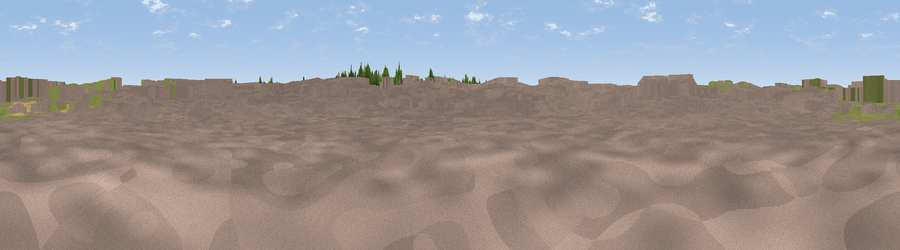

#ViewHeathrow
#46083 in England · top 88% of its area beats it · near Hatton · access?Where it is
The exact computed spot (TQ 08127 74792). Click the marker for map links.
Public access: no public right of way or access land is recorded at this exact spot — it may be on private land. Computed from Natural England's CRoW access layer and OpenStreetMap rights of way — not the legal definitive map. Always verify locally.
The view, rendered

A 360° render of this exact spot computed from the terrain model, tree cover and land cover — summer colours, afternoon light, calibrated against photographs of famous viewpoints. Real trees, hedges and buildings will differ in detail.
The panorama
Grey silhouette: terrain skyline in each direction (720 bearings, Earth curvature and refraction included). Dashed green: skyline with trees (+15 m) and buildings (+8 m) as obstacles. Blue strip: how far the ground is visible on each bearing.
Where the view opens
Wedge length = distance to the farthest visible ground on that bearing (vegetation-aware). Rings at 10, 25 and 50 km.
What fills the view
67% built-up · 24% grassland · 8% woodland ·
Angular shares of the visible panorama (visual magnitude), not map area. Landscape diversity 0.37 (0–1 Shannon).
Key numbers
More beautiful places nearby
The staircase of upgrades: each row has a higher view potential than everything closer. Driving times are estimates from straight-line distance, calibrated against real road routing — check an actual route before setting out.
| Place | Direction | Drive | Score |
|---|---|---|---|
| 27L Runway Viewing Area, Myrtle Avenue | E · 1 km | ~4 min | 16.8 |
| Monolith Hill | S · 2 km | ~6 min | 19.3 |
| Viewpoint near Colham Green | N · 6 km | ~13 min | 27.1 |
| Viewpoint near Englefield Green | WSW · 9 km | ~17 min | 32.8 |
| St Ann's Hill | SW · 9 km | ~18 min | 33.7 |
| Viewpoint near Hayes End | NNE · 9 km | ~18 min | 37.6 |
| Windsor Castle | WNW · 11 km | ~21 min | 39.8 |
| Harrow on the Hill | NNE · 15 km | ~26 min | 42.3 |
51.46178, -0.44495 · source: osm viewpoint · position refined by local search. Computed location — check access rights before visiting.